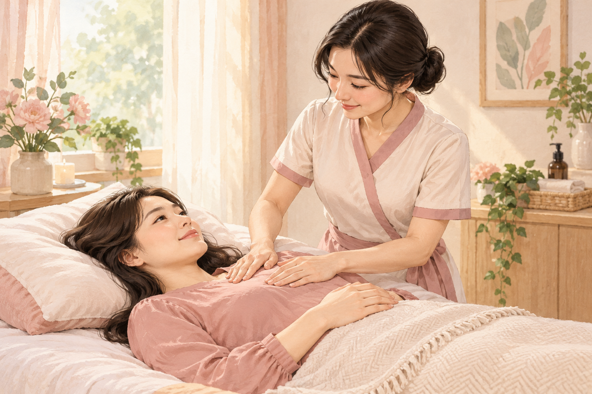
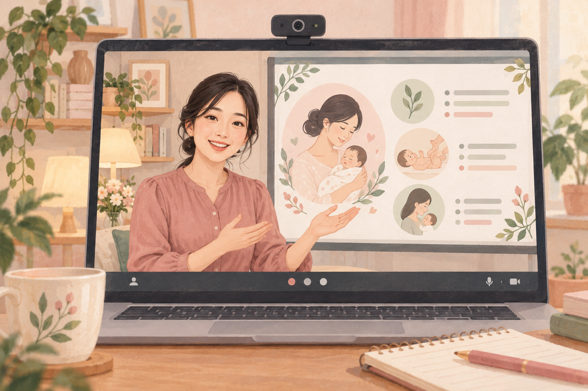
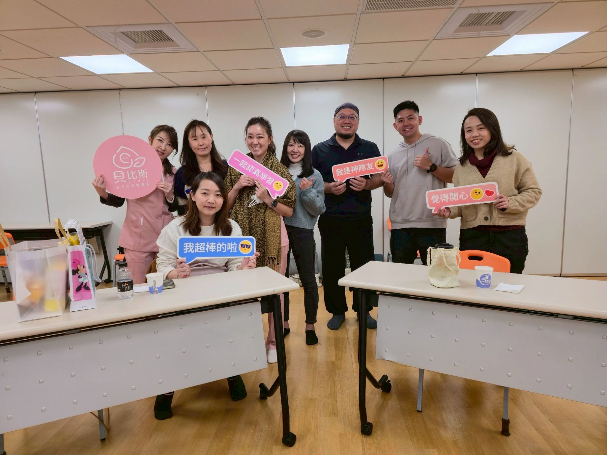

CARE · LEARNING · COMMUNITY
讓專業，成為支持的力量。
從舒乳照護、產後康復，到專業人才培育與機構合作，中華舒乳協會致力建立更完整、更安心的產後照護支持系統。

FOR MOMS & CURIOUS LEARNERS
線上媽媽教室
30 堂課，選擇您需要的陪伴。
給媽媽及對產後工作有興趣的人，從備孕、哺育到產後恢復，選擇想了解的主題。透過 LINE 詢問，付費確認後觀看。
選擇媽媽教室課程 →
在學習中，建立連結
